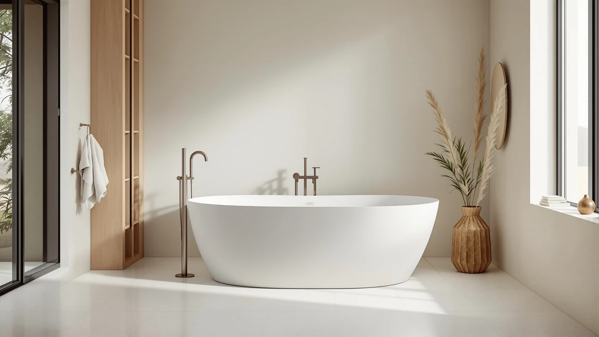

Best Freestanding Tub under $1000 (2026)
Prices and picks verified as of September 2026. Independent, reader-supported reviews.


Quick Answer
After comparing seven acrylic freestanding tubs priced under $1000 on size, soaking length, brand, and price, the EliteEdge 59-inch Freestanding Bathtub is the best freestanding tub under $1000 for most bathrooms. It holds the middle of this price range at $669.99 while giving you the 59-inch footprint most bathrooms are built around. If your room can take a longer tub, the IDEALHOUSE 67-inch Extra-Deep is the better pick at $631.27, the lowest price in this entire comparison.
Our pick: Freestanding Bathtub 59 inch Acrylic, $669.99 Check Price on Amazon
Bottom line: our top pick is the Freestanding Bathtub 59 inch Acrylic Free Standing Tub 59 Inch at $679.99. The best budget option is the 67" Acrylic Freestanding Bathtub at $539.99.
Things to Know Before You Buy
- Every tub here is acrylic, not cast iron or stone resin. That is what keeps a freestanding tub under $1000 in the first place. Acrylic is lighter and easier to carry into a bathroom, and it holds heat better than you might expect, though it does not have the heft or resale cachet of pricier materials.
- 59 inches vs 67 inches is the real decision, not brand. The eight-inch difference changes whether the tub fits your doorway and floor space far more than which of these five brands made it. Measure your bathroom before you compare prices.
- The faucet is never included. Every freestanding tub on the market, at any price, ships as the tub plus overflow and drain hardware only. Budget another $150 to $400 for a floor-mount tub filler and its rough-in.
- Price does not track length in this bracket. The cheapest tub in this comparison is a 67-inch model, and the most expensive is also a 67-inch model from the same brand. Brand positioning and depth marketing move the price more than the extra inches do.
- Drain placement has to match your existing rough-in. Center, left, or right drain placement needs to line up with your plumbing, or you will pay extra to move it during installation.
The best freestanding tub under $1000 has to solve two problems at once: it needs to look like the centerpiece your bathroom deserves, and it needs to leave enough of your renovation budget for the faucet, the plumbing, and everything else a tub install pulls in. That combination rules out a lot of the freestanding market. Premium reinforced-acrylic and stone-resin tubs routinely start well above this range before you add a single fitting, while the cheapest imports cut corners on the acrylic itself, the drain hardware, or both.
We compared seven acrylic freestanding tubs that stay under the $1000 mark in either the 59-inch or 67-inch length, the two sizes that fit the vast majority of American bathrooms without a remodel. Every one of these ships with the overflow and drain hardware that bargain listings sometimes leave out, and every price below is for the tub alone, since the faucet is always a separate purchase on a freestanding tub no matter what you spend.
Our pick for most people is the EliteEdge 59-inch Freestanding Bathtub, which lands near the middle of this price range at $669.99 without asking you to give up the 59-inch footprint most bathrooms are built around. If you have the extra four inches to spare, the IDEALHOUSE 67-inch Extra-Deep is both longer and the least expensive tub in the whole comparison at $631.27. Below we explain how we picked, then walk through all seven tubs, who each one suits, and where it falls short.
Why You Should Trust Us
This guide is written and maintained by Ilane Tall, who runs a network of bathroom-focused review sites and spends most working hours comparing fixtures on the numbers that actually predict buyer satisfaction rather than on marketing copy. We do not run a fake testing lab, and we did not install seven tubs in a warehouse to score them. We read every spec sheet and listing photo, cross-check size, price, and included hardware against what each brand actually ships, and flag anything that looks inflated or vague. For a roundup built around a hard price ceiling, that means paying close attention to what pushes similar tubs over $1000 elsewhere and confirming these seven actually stay under it. Our Amazon commissions never change a ranking.
How We Picked
We started from the acrylic freestanding tub market and filtered to models priced under $1000 with a stated length of either 59 or 67 inches, the two sizes that fit a standard bathroom footprint without custom plumbing. We required that each tub ship with overflow and drain hardware included, since bargain listings that omit it end up costing more once you buy those parts separately. We dropped tubs with vague or missing dimensions, drop-in and alcove tubs mislabeled as freestanding, and anything priced close enough to $1000 that a single price change would push it over the line we set for this guide. Seven tubs from five brands survived that filter, ranging from $631.27 to $789.53.
How We Compared
Because every tub in this price bracket is acrylic, the differences that matter come down to length, price, brand, and finish rather than material. For each tub we recorded exterior length, price, brand, and finish color, then compared those numbers against each other to see which tubs delivered the most length and the strongest brand backing for the money. We also weighed patterns that show up repeatedly across owner feedback for budget acrylic tubs at this price point, such as flex underfoot on thinner shells and the need for careful handling during installation, so the pros and cons below reflect what buyers consistently report rather than what a listing promises. We compared specs and pricing; we did not physically install or soak in any of these tubs.
Our Picks

Freestanding Bathtub 59 inch Acrylic
What we like
- Middle-of-the-pack price at $669.99 leaves real budget room for the faucet and installation
- 59-inch length fits the doorway and footprint of a typical secondary or primary bathroom
- Acrylic shell holds heat longer than a cast iron equivalent at a fraction of the weight
- EliteEdge builds specifically around this price bracket rather than a stripped-down premium line
Flaws but not dealbreakers
- At 59 inches, taller bathers sit more upright than fully reclined
- Like every tub in this comparison, the faucet and its rough-in are a separate purchase
| Material | — |
| Size | 59 Inch |
The EliteEdge 59-inch Freestanding Bathtub is the pick we send most people toward because it does not force a trade-off in either direction. At $669.99 it sits comfortably in the middle of this seven-tub comparison, well clear of the $1000 ceiling, while still holding the 59-inch length that fits the majority of American bathrooms without any wall or plumbing changes. The acrylic shell gives you the warmth retention and light weight that make freestanding tubs easier to move into place than their cast iron or stone resin counterparts, without the premium those materials usually command.
Where this tub earns its spot over cheaper 59-inch alternatives is brand focus. EliteEdge builds specifically around this price bracket rather than positioning the tub as a cut-down version of a more expensive line, and that shows in the consistency of the listing details, from the included overflow and drain hardware to the stated dimensions. The honest limitation is length: at 59 inches, a bather over six feet will sit more upright than fully stretched out. If that describes your household, the 67-inch options below are worth the extra footprint.

67'' Acrylic Freestanding Bathtub Extra-Deep
What we like
- Lowest price of all seven tubs at $631.27
- 67-inch length allows a fuller stretch-out soak than any 59-inch tub here
- Marketed as extra-deep, appealing to buyers who prioritize soaking depth
- IDEALHOUSE offers multiple sizes in this comparison, making it easy to size up or down within one brand
Flaws but not dealbreakers
- 67 inches needs a larger bathroom footprint and doorway clearance than the 59-inch picks
- Being the least expensive tub here, it leaves the smallest cushion if prices shift before you buy
| Material | — |
| Size | 67 Inch |
If your bathroom can take a 67-inch tub, the IDEALHOUSE Extra-Deep is the easiest tub to justify financially in this entire comparison. At $631.27 it is the least expensive of all seven tubs we compared, undercutting even the 59-inch options despite offering eight more inches of length. That combination of size and price is unusual in this category, where longer tubs typically command a premium rather than a discount.
The extra-deep branding points at what IDEALHOUSE is selling here: more water inside the same 67-inch footprint, on top of the extra length over a 59-inch tub. That combination makes this the pick for anyone who wants the fullest soak this budget can buy. The trade-off is the same one every 67-inch tub carries: you need the bathroom, hallway, and doorway clearance to get it into place, and a smaller room cannot take it at all. If your space allows it, though, it is hard to beat this tub on price relative to size.

67" Acrylic Freestanding Bathtub Deep
What we like
- Deep-soak profile in the longer 67-inch body
- Comes from the same IDEALHOUSE lineup as the Extra-Deep pick, so you can compare two deep 67-inch tubs directly
- Still leaves over $200 of headroom under the $1000 ceiling
Flaws but not dealbreakers
- At $789.53, it is the most expensive tub in this comparison
- Costs $158 more than IDEALHOUSE's own Extra-Deep model at the same 67-inch length
| Material | — |
| Size | 67 inch |
IDEALHOUSE shows up twice in this comparison, and the 67-inch Deep model is the pricier of the pair at $789.53. It shares the same 67-inch length and deep-soak positioning as the brand's Extra-Deep tub, but commands a meaningfully higher price for what reads as a similar profile on the spec sheet. That makes it the tub to consider only after you have looked closely at the cheaper option from the same brand.
There is still a case for it. At $789.53 it remains a couple hundred dollars under the $1000 ceiling we set for this guide, and buyers who have a specific reason to prefer this model, whether that is finish, availability, or a detail in the listing photos, are not overpaying by the standards of the freestanding tub market generally. But dollar for dollar against its own sibling tub, the Extra-Deep at $631.27 is the harder one to argue against.

WOODBRIDGE 67" Acrylic Freestanding Bathtub
What we like
- WOODBRIDGE is a widely recognized name in the freestanding tub category, spanning multiple size lines
- 67-inch length gives a fuller stretch-out soak
- $699.00 keeps a wide margin under the $1000 ceiling
- Brand recognition can matter for warranty support compared to lesser-known imports
Flaws but not dealbreakers
- Costs more than three of the four other 67-inch tubs in this comparison
- Still requires the same separate faucet purchase as every other tub here
| Material | — |
| Size | 67 Inch |
WOODBRIDGE is one of the better-known names in the freestanding tub category, and this 67-inch acrylic model is the brand's entry in our under-$1000 comparison. At $699.00 it sits slightly above the midpoint of this lineup, cheaper than IDEALHOUSE's Deep model but more expensive than three of the other 67-inch tubs here. The price difference over the least expensive options buys a brand with a longer track record and a broader size lineup across the freestanding tub market.
For buyers who weigh brand recognition alongside price, particularly if warranty support or resale matters to the decision, that track record can be worth the extra cost over a newer or less established name. It does not change the fundamentals shared by every tub in this guide: the faucet is a separate purchase, and 67 inches requires the same doorway and bathroom clearance as the other longer tubs here. WOODBRIDGE simply asks a fair, mid-range price for the length and the name.

59 Inch Acrylic Freestanding Bathtub
What we like
- Gives buyers a same-brand alternative to the EliteEdge top pick
- $694.83 stays close to the middle of this seven-tub price range
- Compact footprint fits the same bathrooms as our top pick
Flaws but not dealbreakers
- Priced $25 higher than our top overall pick at the same 59-inch length
- Shares the shorter-soak trade-off of every 59-inch tub in this guide
| Material | — |
| Size | 59 Inch |
This is IDEALHOUSE's answer for buyers who want the shorter footprint rather than their 67-inch models. At $694.83 it lands within $25 of our overall top pick, the EliteEdge 59-inch tub, and fits the exact same range of compact and mid-size bathrooms. The main reason to choose it over the EliteEdge is if you are already comparing IDEALHOUSE's other 67-inch tubs and want the consistency of sourcing a 59-inch model from the same brand.
On its own merits, it is a solid middle-of-the-road choice in this comparison: not the cheapest, not the most expensive, and sized for the majority of bathrooms that cannot accommodate a 67-inch tub. The trade-off is the one every 59-inch tub in this guide shares, a shorter soaking length that suits most bathers but asks taller ones to sit more upright. If that is an acceptable compromise, the price difference against our top pick is small enough that brand preference is a reasonable tiebreaker.

67 Inch Acrylic Freestanding Bathtub
What we like
- Second-lowest price in the entire comparison at $649.99
- 67-inch length for buyers who need the longer footprint
- Meaningfully cheaper than both IDEALHOUSE 67-inch models and the WOODBRIDGE tub
Flaws but not dealbreakers
- Garvee has a shorter track record in this category than WOODBRIDGE
- Still $18.72 more than the least expensive tub in this comparison
| Material | — |
| Size | 67 Inch |
Garvee's 67-inch tub is the second-cheapest option in this entire comparison at $649.99, trailing only the IDEALHOUSE Extra-Deep by less than $20. For buyers set on the longer 67-inch length but not willing to spend up to the WOODBRIDGE or IDEALHOUSE Deep price points, this is the practical middle ground between size and cost.
Garvee does not carry the same brand recognition in the freestanding tub space as WOODBRIDGE, and buyers who weigh that heavily may prefer to pay more for the established name. But on price alone, this tub delivers the full 67-inch length for barely more than the cheapest tub in the entire lineup, which makes it one of the stronger value picks here for anyone who has already decided on the longer size.

59 Inch Freestanding Bathtubs White
What we like
- Clean, classic white finish that matches most bathroom color schemes
- 59-inch footprint fits the same range of bathrooms as our top pick
- From GarveeLife, a sister line to the Garvee 67-inch tub in this same comparison
Flaws but not dealbreakers
- At $699.99, it is the second-most expensive 59-inch tub in this comparison
- Gloss white finishes generally show water spots more readily and need more frequent wiping down
| Material | — |
| Size | 59 Inch |
GarveeLife's 59-inch tub rounds out the compact side of this comparison with a straightforward white finish and no unusual branding around depth or capacity. At $699.99 it costs slightly more than our top pick and the IDEALHOUSE 59-inch alternative, without a clear feature difference that explains the gap based on the listing details available.
That makes it a reasonable choice mainly for buyers who have a specific reason to prefer GarveeLife, whether that is availability, a detail in the product photos, or simply having already compared the brand's 67-inch Garvee tub earlier in this list and wanting a matching source for a 59-inch version. Like any gloss white acrylic tub, expect water spots to show more readily than on a matte or off-white finish, and plan on wiping it down more often to keep it looking clean.
Quick Comparison
| Product | Material | Price | Rating | Best for | Get it |
|---|---|---|---|---|---|
| Freestanding Bathtub 59 inch Acrylic | — | $669.99 | 4 | Most buyers, best overall value | View on Amazon → |
| 67'' Acrylic Freestanding Bathtub Extra-Deep | — | $631.27 | 4 | Longest soak at the lowest price | View on Amazon → |
| 67" Acrylic Freestanding Bathtub Deep | — | $789.53 | 4 | Deep soak, higher budget | View on Amazon → |
| WOODBRIDGE 67" Acrylic Freestanding Bathtub | — | $699.00 | 4 | Established brand, mid-range price | View on Amazon → |
| 59 Inch Acrylic Freestanding Bathtub | — | $694.83 | 4 | 59-inch alternative brand | View on Amazon → |
| 67 Inch Acrylic Freestanding Bathtub | — | $649.99 | 4 | Budget-friendly 67-inch | View on Amazon → |
| 59 Inch Freestanding Bathtubs White | — | $699.99 | 4 | Classic white 59-inch finish | View on Amazon → |
The Competition
We looked at dozens of freestanding tubs before narrowing this list to seven, and most of what we left out fell into one of three categories. A large group of listings priced right around $1000 got cut entirely, since a single price change would push them over the ceiling we set for this guide and undermine the whole point of a best freestanding tub under $1000 roundup. We also passed on tubs with vague or missing dimensions, where the listing did not clearly state an exterior length, since that number is the single most important spec for confirming a tub will actually fit through your door and into your bathroom.
A third group looked like freestanding tubs in their thumbnail photos but were actually drop-in or alcove tubs designed to sit against a wall or inside an existing surround, not stand on their own in the middle of a room. Those do not belong in a freestanding comparison regardless of price, so we excluded them even when they were cheaper than anything on this list. If your bathroom cannot fit a 59 or 67-inch tub at all, our best small freestanding bathtubs guide covers more compact sizes.
Frequently Asked Questions
What is the best freestanding tub under $1000?
Among the seven acrylic tubs we compared, the EliteEdge 59-inch Freestanding Bathtub is the best overall pick at $669.99, balancing a fair price with the 59-inch length that fits most bathrooms. If your bathroom can take a longer tub, the IDEALHOUSE 67-inch Extra-Deep is both bigger and cheaper at $631.27.
Can you get a good freestanding tub for under $1000?
Yes. All seven tubs in this comparison are acrylic freestanding tubs priced between $631.27 and $789.53, well under the $1000 mark, and all include the overflow and drain hardware that some cheaper listings leave out. The trade-off at this price is acrylic construction rather than cast iron or stone resin, which is lighter and more affordable but generally considered less premium.
Is 59 inches or 67 inches better for a freestanding tub under $1000?
It depends on your bathroom and your height. A 59-inch tub fits a wider range of bathrooms and doorways without a remodel, while a 67-inch tub gives a taller bather more room to stretch out but needs more floor space and clearance to install. Measure your bathroom and doorway before choosing, since both sizes appear in this comparison at similar prices.
Does a freestanding tub under $1000 include the faucet?
No. Every tub in this comparison, and nearly every freestanding tub on the market regardless of price, is sold as the tub plus overflow and drain hardware only. Budget an additional $150 to $400 for a floor-mount tub filler and its installation.
Why do prices vary so much between 67-inch tubs in this comparison?
Brand and depth positioning explain most of the spread. The IDEALHOUSE Extra-Deep is the least expensive 67-inch tub at $631.27, while the same brand's Deep model costs $789.53, and WOODBRIDGE's established name commands $699.00. Length alone does not set the price in this bracket; brand reputation and depth marketing move it more than the extra inches do.